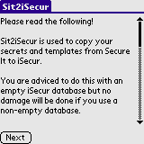
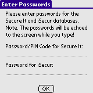
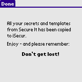

Sit2iSecur is a program used to copy secrets and templates from Secure It to iSecur.
Sit2iSecur is released under the GNU General Public License v2 and requires Palm OS 3.5 or better to work.
You can support this project by donating any amount to my Pay Pal account.
The upgrade process should be carried out in this order:
Note. It is possible to convert data from Secure It to iSecur if your iSecur database contains data. You may run the risk of overwriting data in your database so it is recommended to do the conversion to an empty iSecur database.
Please read all of the text on this screen. The conversion process is described in more details here.
Enter your credentials for both Secure It and iSecur and then tap OK to begin the conversion process.
When done please verify the result in iSecur. If everything looks good you can delete Sit2iSecur. If something went wrong, the final screen will tell you what went wrong and you should be able to correct the problem and rerun the conversion process again.
v1.1 (2006-11-03) Can now copy secrets to database created by iSecur-1.3. v1.0 (2006-07-10) First public release.